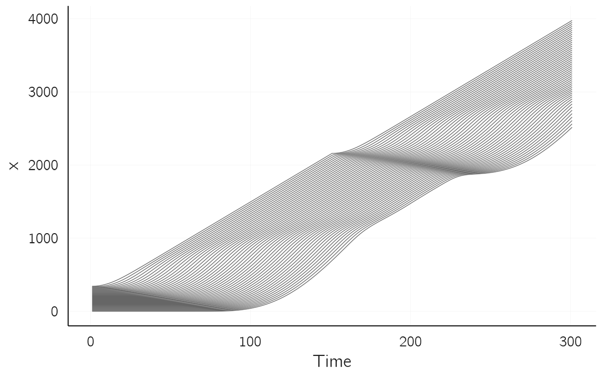
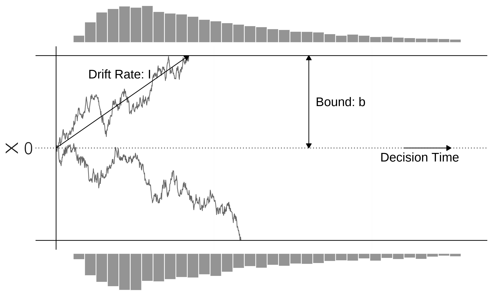
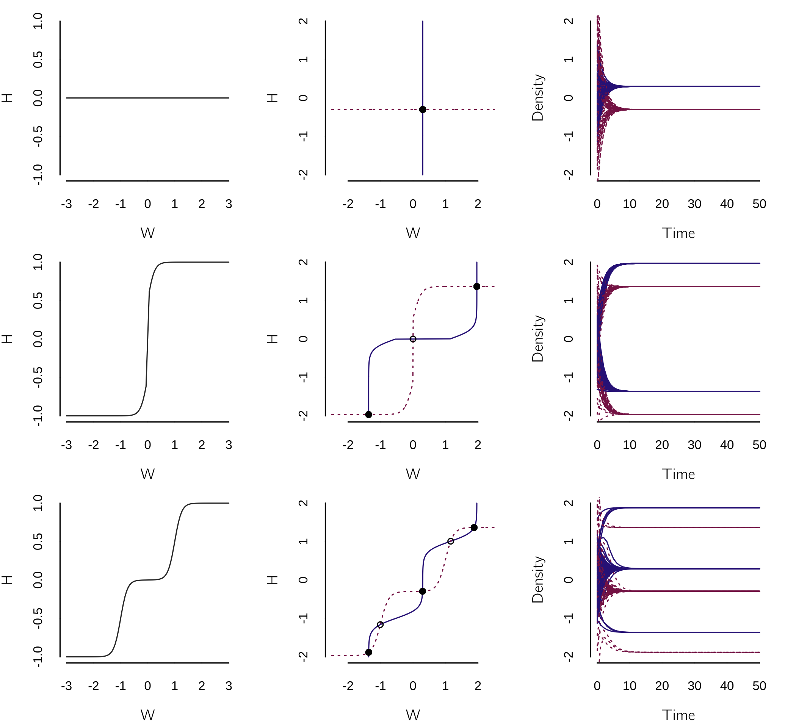
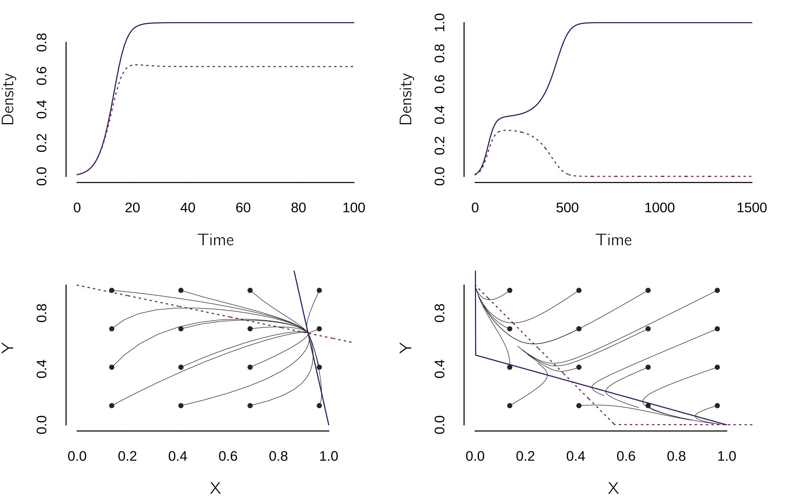
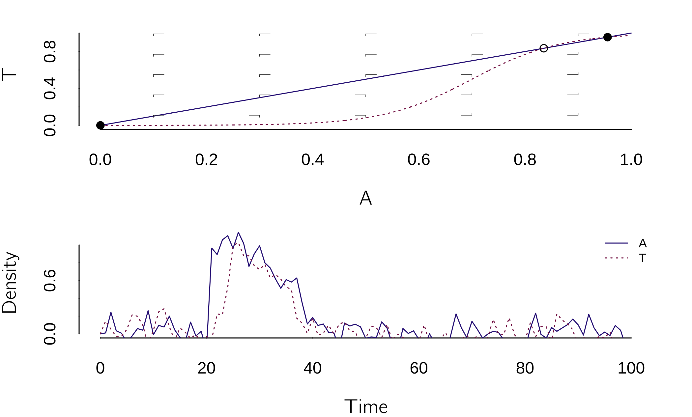
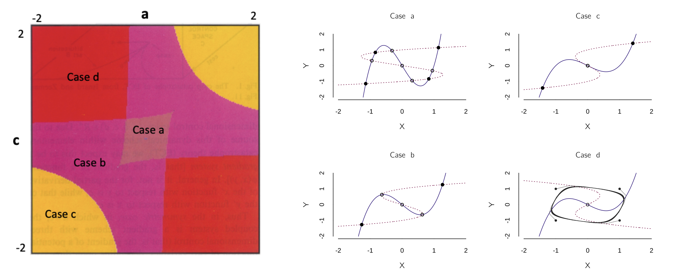
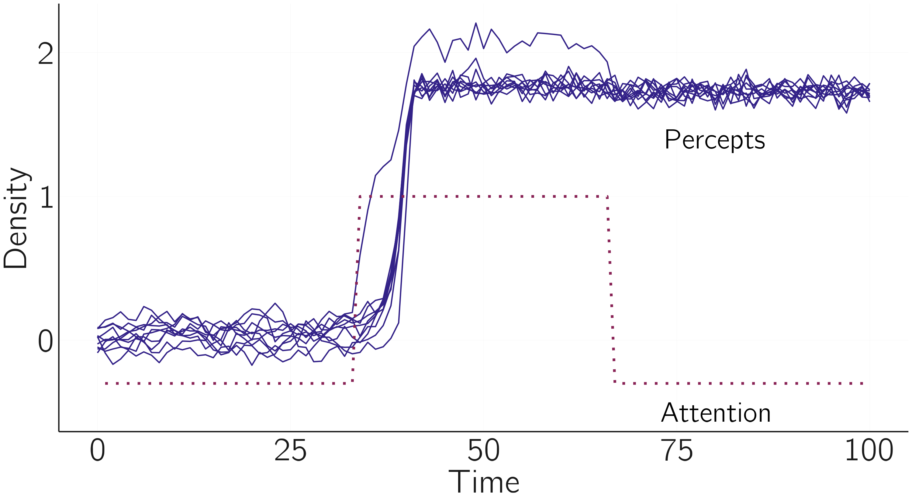
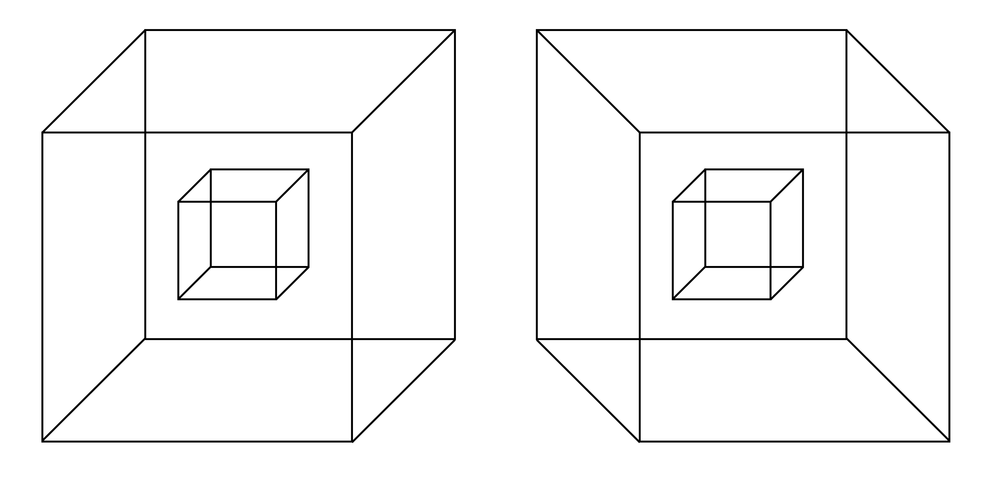

4 Building dynamic system models
Suppose you are in a bar in Amsterdam and someone asks you if you would like another beer. Probably, the number of drinks you have already had will influence your decision. Perhaps your self-control, whatever it may be, kicks in and you refuse, even though the alcohol already in your system may be interfering with that self-control. Or you may have reached your limit and simply collapse. In this chapter, we will see how such a process can be modeled using nonlinear differential equations.
This form of modeling is often called nonlinear dynamical systems theory (NLDST), another branch of the complex systems approach. We have seen many examples of nonlinear dynamical system models in earlier chapters. The logistic map is an example of a discrete-time nonlinear dynamical model defined as a difference equation. The catastrophe models are also dynamical systems governed by a potential function. In Chapter 3, Section 3.4, I made a distinction between phenomenological modeling (assuming the cusp) and mechanistic modeling (deriving the cusp from first principles). Here we will focus on the more mechanistic construction of dynamical system models.
In psychology, following the principle of parsimony (Occam’s razor) we must start with simple models. We don’t have many first principles to start with, and our data are often limited, making model testing difficult. But we can learn a lot from other disciplines. Nonlinear dynamical systems have been developed in all the natural sciences, but my main inspiration comes from mathematical biology, especially ecological modeling (James D. Murray 1989). As a rough estimate, one could say that mathematical psychology is where mathematical biology was a century ago., but this depends a bit on the subfield of psychology. In areas such as neural modeling, speeded decision making, memory choice theory, and psychometrics, there are advanced models, and I will provide some examples later in this chapter.
As in the previous chapter, I will first present a basic overview of dynamical systems modeling in other sciences. The second part concerns applications in psychology. I refer to more advanced sources when necessary. I recommend the book by Gottman et al. (2002) for its clear and basic explanation of the mathematical aspects of dynamical systems modeling. The online lectures on nonlinear dynamics and chaos and the book by Steven Strogatz (2018) are very helpful. Murray’s book on mathematical biology is also highly recommended (J. D. Murray 2002). A basic introduction is Thinking in Systems of Meadows (2008).
This chapter will be hands-on again. We will use the Grind package in R to simulate dynamical systems models. Grind (de Boer 2018) is based on the R-packages deSolve and rootSolve (Soetaert, Petzoldt, and Setzer 2010a). It facilitates numerical integration, phase plane analysis, and stability analysis of steady states. The manual can be found at https://github.com/hansschepers/grindr/blob/master/inst/documentation/GRIND%20tutorial.pdf
At the end of the chapter, I will introduce causal loop diagrams and an open-source tool, Insightmaker, that makes it easy to create causal loop diagrams. It will also be used to simulate dynamical systems models and I will provide some examples.
4.1 Basic concepts
4.1.1 Back to the logistic equation
We have seen the logistic equation in the form of the logistic map, where time progressed in discrete steps. The logistic map is a difference equation, \(X_{t + 1} = f(X_{t})\), but in this chapter we will focus on differential equations in continuous time. We will limit ourselves to ordinary differential equations (ODE’s). In such equations we take the derivatives with respect to only one variable. The ODE for logistic growth1 is:
\[ \frac{dX}{dt} = rX(1 - X) \tag{4.1}\]
The change in \(X\) is a function of \(X\) itself. The exponential growth term \(rX\) dominates when \(X\) is close to zero, but the growth levels off as \(X\) approaches 1. A solution to this equation expresses \(X_{t}\) as a function of the initial state \(X_{0}\). In simple cases we can do this using the math we learned in high school. For exponential growth \(\frac{dX}{dt} = rX\), this is the derivation:
\(\frac{dX}{dt} = rX\) \(\frac{dX}{X} = rdt\) |
by separation of variables |
| \(\int_{}^{}\frac{dX}{X} = \int_{}^{}{rdt}\) | integrate |
| \(\ln X = rt + C\) | assuming \(X \geq 0\) |
| \(X = e^{rt + C} = e^{C}e^{rt}\) | by taking the exponent |
| \(X_{0} = e^{C}e^{r0} \Longrightarrow X_{0} = e^{C}\) | compute the integration constant |
\[ \Longrightarrow X_{t} = {X_{0}e}^{rt} \tag{4.2}\]
But for more complex models such an analytical solution is out of scope and numerical solutions (by simulation) are required. This is not the preferred choice. These simulations can be slow, may accumulate rounding errors, and it can be difficult to search the entire parameter space, especially when multiple parameters are involved.
The naive implementation of differential equations in R is risky. This would involve a for loop:
x <- x0 <- .1 # initial value
r <- .5 # growth rate
dt <- .00001 # time step in simulation
t <- 10 # Nt, time we want to know the value of x
timesteps <- t/dt # required time steps given t and dt
for(i in 2:timesteps) # note the 2 to use the starting value
{
x[i] <- x[i-1] + r*x[i-1]*dt
}
x0*exp(r*timesteps*dt) # analytical solution
x[timesteps] # compare
timesteps # length of simulationwhere \(dt\) must be chosen by hand. If you test some values of \(dt\), you will see that a value too high (.5) leads to a solution (x[timesteps]) that is different from the analytical solution. But if we set \(dt\) very low (.00001), it takes unnecessarily long.
This is why we use ‘solvers’, numerical methods for ordinary differential equations. We will use the R-package Grind, although many other methods are available in R. One could also directly use the R packages deSolve and rootSolve by Soetaert, Petzoldt, and Setzer (2010a), on which the Grind package is based. Grind has to be installed from GitHub using:
install.packages("remotes")
remotes::install_github("hansschepers/grindr")The packages required are:
library(deSolve)
library(rootSolve)
library(FME)
library(Grind)The code consists of defining the model, the parameters \(p\) and the initial values \(s\). Main functions are run(), plane(), newton(), continue() and fit(). They will be introduced using examples. With run() we generate a time series for the model.
install.packages("remotes")
remotes::install_github("hansschepers/grindr")
library(deSolve)
library(rootSolve)
library(FME)
library(Grind)
model <- function(t, state, parms) {
with(as.list(c(state,parms)), {
dX <- r*X # the exponential model
return(list(c(dX)))
})
}
p <- c(r=.5) # parameter r
s <- c(X=.1) # initial value
run(tmax=5) # run until t = 5, numerical solution
s['X']*exp(p['r']*5) # compare with analytical solutionWe don’t have to worry about time steps anymore and the numerical and analytical solutions converge. This is of course a trivial use of an ODE solver, but much more can be done.
In analyzing the behavior of a dynamical system, the first thing we want to know about a dynamical system is what the equilibria \(X^{*}\) are. To do this, we need to set the time derivative equal to zero, \(\frac{dX}{dt} = 0\). For the exponential function this is simply \(rX = \ 0\), i.e., when \(X\) is zero. Second, we want to determine whether these equilibria are stable or unstable. Whether \(X^{*}=0\) is stable can be determined by checking the second derivative in \(X^{*}\). If this derivative is less than zero, then the fixed point is stable. The second derivative is \(r\), so \(X^{*} = 0\) is an unstable fixed point whenever \(r > 0\) and stable whenever \(r < 0\). You can check this in Grind by using\(\ r\) values of -.1 and .1, and start values equal to or just above or below 0.
For Equation 4.1, the logistic function, we also want to know the equilibria, the stable and unstable fixed points. To do so we follow the same steps as for the exponential function (see exercises).
I note that the continuous-time implementation of the logistic function is somewhat boring compared to its discrete-time variant that we studied in Section 2.2. The difference is that the overshooting and undershooting do not occur in continuous time. By changing the logistic model in Grind to:2
dX <- r*X*(1-X) - X and use method='euler' in the run() function, you can simulate the discrete-time logistic map. Check if you get chaos for \(r = 4\). Use the Euler method only in special cases, as it is generally the least accurate approach.
4.1.2 The Lotka-Volterra models
Perhaps the best-known population models are the Lotka-Volterra equations (J. D. Murray 2002). These consist of coupled differential equations, one for the density of the prey and one for the density of the predator.
\[ \frac{dN}{dt} = aN - bPN \tag{4.3}\]
\[ \frac{dP}{dt} = cPN - dP \tag{4.4}\]
Where \(N\) and \(P\) refer to the sizes of the prey and predator populations, a and c determine the growth rates, and b and d control the mortality rates. Note that the mortality rate of prey depends on both \(N\) and \(P\), while the mortality rate of predators depends only on \(P\). Similarly, the growth terms are also asymmetric, predators increase as a function of both \(N\) and \(P\), they eat prey. We will follow the simple example provided by Wikipedia (on Lotka-Volterra equations).
To implement this model in Grind, we use:
LV <- function(t, state, parms) {
with(as.list(c(state,parms)), {
dN <- a*N - b*P*N
dP <- c*P*N - d*P
return(list(c(dN, dP)))
})
}
p <- c(a=1.1,b=.4,c=.1,d=0.4) # parameters
s <- c(N=10,P=10) # 10 baboons and 10 cheetahsSome typical uses of Grind are:
layout(1:2)
data=run(odes=LV,tstep=.01,table=T) # set tstep to low value
# phase plot for different starting values
plane(odes=LV,portrait = TRUE, ymax=17, xmax=50, tstep=0.1,grid=4)The plane function makes a phase plot with \(N\) and \(P\) as axes. The black points are initial states. What we learn from this is that the equilibrium of the Lotka-Volterra equations is a limit cycle that depends on the choice of the initial conditions. A well-known improvement to this model is to make the prey growth density dependent by using the logistic equation. This can be done by setting dN <- a*N *(1-N) - b*P*N in the model. This is the case used as an example in the Grind tutorial, which I highly recommend reading (de Boer 2018). It also contains the appropriate parameter values for this model variant. In this density dependent model there are fixed points, in contrast to the original model. This shows that such model choices can have a large effect.
A famous example of a system of three coupled differential equations is the SIR model used to model infectious diseases. The differential equations specify the change in susceptible, infected, and recovered members of the population. You can now easily implement this model yourself (see exercises).
4.1.3 Fitting models: stochasticity versus noise
Grind includes an option to fit dynamical systems models. With fit(), based on the modFit() function from the FME package (Soetaert, Petzoldt, and Setzer 2010b), one can estimate the model parameters given a data set. These functions also provide confidence intervals, allow fixing parameters and bootstrap analysis. Fitting nonlinear dynamical systems models to data is an art in itself. For example, these methods can be very sensitive to the choice of initial values.
I will illustrate the use of fit() on three data sets created with the original Lotka-Volterra model from the previous section. The first data set is the deterministic data set, the data that follows directly from the code above. The second one is created using a stochastic Lotka-Volterra model. How this works will be explained in the next section. The third is a deterministic data set with measurement error. We will see that the last two cases are very different.
set.seed(1)
layout(matrix(1:4,2,2,byrow=T))
p <- c(a=1.1,b=.4,c=.1,d=0.4) # p is a named vector of parameters
s <- c(N=10,P=10) # s is the state
n <- 30
data_deterministic <- run(odes=LV,n,table=T,timeplot =F) # deterministic data
data_stochastic <- run(odes=LV,n,table=T,after="state<-state+rnorm(2,0,.1)",
timeplot =F) # add stochasticity
data_error <- run(odes=LV,n,table=T,timeplot =F)
data_error[,2:3] <- data_error[,2:3]+
matrix(rnorm(2*n,0,2),,2) # measurement error
#fit & plot
s<- s*abs(rnorm(2,1,0.1));s; p<- p*abs(rnorm(4,1,0.1));p # start values
f_deter<- fit(odes=LV,data_deterministic,main='deterministic')
f_stoch<- fit(odes=LV,data_stochastic,main='stochastic')
f_error<- fit(odes=LV,data_error,main='error')
pars <- matrix(c(f_deter$par[3:6],f_stoch$par[3:6],f_error$par[3:6]),,3)
pars <- rbind(pars,c(summary(f_deter)$sigma,summary(f_stoch)$sigma,summary(f_error)$sigma))
barplot(t(pars),beside=T,names=c('a','b','c','d','Residuals'),
legend.text=c('deterministic','stochastic','error'),
args.legend=c(x=13))This results in:

Note that the error data set looks very similar to the deterministic data set because it contains only the measurement error (X is true score + error). The error does not affect the dynamics itself. In the stochastic case, the error (noise) is added to the states after each time step, which affects the dynamics. In Figure 4.1, you can see that the positions of the waves change. In this well-chosen case, the fit is quite good in all three cases, the parameter estimates are all quite close to the true values. Unfortunately, these results are quite unstable. You can do some testing yourself.
4.1.4 Back to the cusp
To illustrate how Grind can be used to perform bifurcation analysis, we go back to the cusp. Recall that the differential equation for the cusp is:
\[ \frac{dX}{dt} = - V^{'}(X) = {a + bX - X}^{3} \tag{4.5}\]
model <- function(t, state, parms){
with(as.list(c(state,parms)),{
dX <- a + b*X - X^3 # cusp
return(list(dX))
})
}
p <- c(a=0,b=1); s <- c(X=.1); run(ymin=-1)
s[1] <- -.1; run(add=T)This code shows two runs demonstrating bistability for \(a = 0\) and \(b = 1\).
A better way to demonstrate bistability in the time series is to make the system stochastic. This was done in Chapter 3, Section 3.5.2.1, by using a stochastic differential equation: \(dX = - V^{'}(X)dt + \sigma dW(t)\). Grind has a great trick for this. With the ‘after’ parameter in the function call, we can add discrete events to the system. ‘After’ can also be used to change parameter or state values after a certain amount of time or after some condition (see the manual). We use it here to add a random number sampled from a normal distribution, with a mean of 0 and a standard deviation of .4, to \(X\). The best way to simulate this in Grind is using the Euler method with a small timestep. The noise term should be corrected with \(\sqrt{dt}\), as shown in the code. The Wikipedia page on stochastic differential equations will tell you more about the underlying ideas.
As can be seen in Figure 4.2, the stochastic force causes spontaneous jumps between the two modes of the cusp. When noise or random fluctuations cause the entire equilibrium landscape of a dynamical system to become observable, it is often referred to as stochastic resonance. Stochastic resonance is a notable example of how noise, which is often considered undesirable or disruptive, can actually play a constructive role in certain systems, helping to reveal hidden patterns and structures that might otherwise remain obscured. You can see this by comparing the figure with one generated with a standard deviation of .1 or less.
layout(t(c(1,1,1,2)))
data <- run(table=T,tmax=1000,method='euler',tstep=.1,after="state<-state+
rnorm(1,mean=0,sd=0.4)*sqrt(tstep)",ymax=2,ymin=-2,timeplot=F)
plot(data,type='l',bty='n')
barplot(hist(data[,2],30,plot=F)$counts,xlab="X",hor=T)
4.1.5 Bifurcation analysis
By combining the Grind functions newton() and continue(), we can perform bifurcation analysis. The newton() function finds stable and unstable fixed points and the continue() function implements the parameter continuation of a steady state, providing a bifurcation diagram. It show the change in equilibria when we change parameter. This is what we did in Chapter 2 for the logistic map, when we varied r and plotted the equilibria (see Figure 2.8).
It is often necessary to run the combination of these two functions repeatedly, starting from different initial states.
p <- c(a=0,b=1)
low <- newton(s=c(X=-1)) # finds a minimum starting from X = -1
continue(low,x="a",y="X",xmin=-2,xmax=2,ymax=2) # Continue this steady state varying a
high <- newton(s=c(X=1)) # again starting from X = 1
continue(high,x="a",y="X",xmin=-2,xmax=2,ymax=2,add=T)
Another great tool in R is the deBif package by Andre M. de Roos. This is a R Shiny application that uses the same model specification and allows for a more interactive investigation. Given our previous model and the definition of \(s\) and \(p\), we can run:
install.packages("deBif")
library(deBif)
phaseplane(model,s,p)The phaseplane() function returns a time plot and the steady states. You can change parameters and initial states on the left side, and plot parameters on the upper right side (click on the two gears). The Steady States option is very useful as it shows the stable and unstable fixed points. Be sure to set the minima and maxima of the plot correctly.
With
bifurcation(model,s,p)You can create one- and two-parameter bifurcation diagrams (using the LP curve option). The two-parameter bifurcation diagram (bottom left) cannot be created in Grind. See the deBif help pages (with ??deBif) for further instructions.

4.1.6 Spruce Budworm outbreak model
In chapter 3, Section 3.4.1, I introduced the Spruce Budworm outbreak model. We will use this model later as a model of addiction. The bifurcation diagram can be made with:
spruce <- function(t, state, parms) {
with(as.list(c(state,parms)), {
du = r*u*(1 - u/q)-u^2/(1+u^2)
return(list(c(du)))
})
}
state <- c(u = 0.5)
parms <- c(r = 0.4, q = 10)
bifurcation(spruce, state, parms)Note that this predator-prey model only consists of one equation. There is no separate dynamic equation for the birds. The reason is that these budworm outbreaks happen in a few weeks. Birds do not reproduce on this time scale. The variables are reparametrized (see Section 3.4.1). The predation term, in the original parametrization \(- \frac{BN^{2}}{A^{2} + N^{2}}\), also has a logistic form that starts to accelerate at \(N = A\) up to the maximum level \(B\). The slow start A is used because birds only switch their diet to budworms when this population reaches a certain level (Ludwig, Jones, and Holling 1978). The fixed number of birds can only eat B budworms. This specific predation term is called the Holling type III model. All Holling types and their formulas are shown in Figure 4.5.

4.1.7 Evaluation of ecological modelling
Understanding the technical basics of dynamical systems theory is one thing, but actually building useful dynamical systems models is quite another. Every term in every differential equation of a model needs some underpinning. These models make many assumptions, both implicit and explicit. The Lotka-Volterra model, for example, assumes that the prey population grows exponentially in the absence of the predator, that the predator population dies off with the prey population and does not switch to other prey species, that the response of the predator population to changes in the prey population is direct and not delayed, that there is no spatial component to the model, and that the rates of change of the populations are proportional to their sizes, to name just a few. These assumptions are widely debated in the biological literature (Abrams et al. 2000), and modifications of these assumptions may have significant consequences. In fact, hundreds of extensions and variants have been proposed and studied.
For example, the original Lotka-Volterra model has no stable points, only limit cycles. While these cycles have been observed in nature, they are not overwhelmingly common. As we have seen, the dynamics of the system are significantly altered when prey growth is made dependent on prey density. This model has fixed-point equilibria instead of limit cycles.
Adding a spatial component can also make a big difference, as shown in the example of hypercycles (see Szostak, Wasik, and Blazewicz 2016 for a brief review). Adding more prey and predator species also makes a difference (Johnson, Mumma, and St-Laurent 2019). There are many interesting options for the predator term in the prey equation. Tyutyunov and Titova (2020) compare 12 trophic functions, alternatives to the Holling functional responses. The options are overwhelming. Biologists face a problem here that I discussed in Chapter 1, Section 1.4. Models easily become too complex. Recall that the traffic simulation models were extremely simple, yet sufficient to explain key phenomena.
An additional problem is that empirically testing all these different models is difficult. Although the quality of biological data is often superior to that of psychological data, biologists must also rely on the qualitative predictions of their models. Models in chemistry and especially physics can often be tested quantitatively. Transitions occur precisely at the predicted values of the control variables. Ecological models, much like those in psychology, do not allow for this level of prediction. This is a problem because if we can only test our model qualitatively (are there limit cycles or not, what type of transitions can be detected, is there hysteresis or not), many model choices are not particularly relevant. One of the most significant challenges in complex systems research in the life sciences and psychology is constructing dynamical system models that effectively address these data-related issues.
A case in which this is less of an issue is the traffic example that I introduced in Chapter 1. I asked you to play around with the online simulation. We now know the basics to better understand this model. The Wikipedia page on this model (‘Intelligent Driver Model’) presents the equations, which are also coupled ordinary differential equations. The implementation in Grind of the simplest case looks like this:
model <- function(t, state, parms){
with(as.list(c(state,parms)),{
x <- state[1:n]
v <- state[(n+1):(2*n)]
dx <- v # change in distance = speed
delta_v <- v- m %*% v # difference in speed to next car
s_alpha <- m %*% x - x -l # distance to next car
s_alpha[n] <- 100 # front car has no car in front
s_star <- s0 + v * T + v * delta_v / (2*sqrt(a*b))
dv <- a * (1 - (v/v0)^delta - (s_star/s_alpha)^2) # change in speed
return(list(c(dx,dv)))
})
}
n=50
p <- c(l=5,v0=30,T=1.5,a=.73,b=1.67,delta=4,s0=2)
x_init <- (0:(n-1))*(p['s0']+p['l'])
v_init <- rep(0,n)
s <- c(x_init,v_init)
m <- diag(1, n, n); m= rbind(m[-1,],0) # order cars
# simulation with front car suddenly breaking at t = 150
data=run(tmax=300,timeplot = F,table=T,after = 'if (t==150) state[2*n] = 0')
matplot(data[,2:(n+1)],type='l',bty='n',xlab='time',ylab = 'x')
Understanding the reasoning behind the differential equation is not so easy, but I want to make another point. The Wikipedia page gives parameters values with units (s, m/s or m/s2). One can also have dimension free parameters (the acceleration exponent). This dimensional analysis is a crucial step in modeling in physics but a weak point in biological and especially psychological applications. They hamper the quantitative test of models.
4.2 Psychological models
In this section, I present an overview of dynamical systems models in psychology, primarily in the form of systems of differential equations. Although the list is extensive, it is not exhaustive. It is important to explore different models and applications before embarking on your own modeling efforts.
4.2.1 Response time models
Many dynamic models have been proposed in the study of speeded decision making (Bogacz et al. 2006). The best-studied case is the two-alternative forced-choice task, where a stimulus is presented, and a choice must be made between two alternatives as quickly as possible. The stimulus could be an arrow pointing left or right. Accumulator models assume that noisy information is accumulated over time until a decision bound is reached and a motor response is initiated.

One way to model this process is with a single stochastic linear differential equation, called the drift-diffusion model, with \(I\) as the stimulus-driven input:
\[ dX = Idt + \sigma dW \tag{4.6}\]
As before \(dt\) is moved to the left-hand side of the equation. \(dW\) is white noise, normally distributed with zero mean and with standard deviation \(\sigma\) (set to .1 by default). We start at zero, \(X_{t = 0} = 0\), assuming no bias for one of the choice alternatives.
The implementation of the model in Grind is quite simple. The trick is again in the run statement, which adds white noise after each step.3 We stop the run when either the negative or positive bound is reached.
model <- function(t, state, parms) {
with(as.list(c(state,parms)), {
dX = I
return(list(c(dX)))
})
}
p <- c(I=.01); s <- c(X=0)
bound <- 1
run(table=T,method='euler', tstep=.1,
tmax=500,after="state<-state+rnorm(1,mean=0,sd=0.1)*sqrt(tstep);
if(abs(state)>bound) break",ymin=-bound,ymax=bound)The model explains observed response times and accuracies in terms of the underlying process parameters, drift rate and confidence bound. By fitting the model to the data, we can determine whether slow responses are due to a low drift rate (low skill or difficult task) or a conservatively chosen bound. This drift diffusion model also explain the speed-accuracy tradeoff. If we set our confidence bound higher, we are slower but more accurate.
A well-known extension of the drift diffusion model is the Ornstein–Uhlenbeck (O-U) model:
\[ dX = (\lambda x + I)dt + \sigma dW \tag{4.7}\]
For \(\lambda < 0\) this process converges to \(I/\lambda\) (assuming \(\sigma = 0\)), while for \(\lambda > 0\) it diverges \(.\) For the psychological interpretation, I refer to Bogacz et al. (2006). The simplest two-dimensional model is the race model:
\[ \begin{gathered} dX_{1} = I_{1}dt + \sigma W_{1} \\ dX_{2} = I_{2}dt + \sigma W_{2} \end{gathered} \tag{4.8}\]
Now two independent processes run (race) to one positive bound. The first one to arrive wins. More biologically inspired models involve inhibition. The equations of mutual inhibition model are:
\[ \begin{gathered} dX_{1} = (-k_{1}X_{1} - w_{1}X_{2} + I_{1})dt + \sigma W_{1} \\ dX_{2} = (-k_{2}X_{2} - w_{2}X_{1} + I_{2})dt + \sigma W_{2} \end{gathered} \tag{4.9}\]
Note that these are all linear dynamical system that do not exhibit complex behavior. Examples of nonlinear alternatives are presented in Roxin and Ledberg (2008) and Verdonck and Tuerlinckx (2014) and discussed in Ratcliff et al. (2016).
The relations between different accumulator models are summarized in this figure from Bogacz et al. (2006). It shows that convenient models such as the drift diffusion model (DDM) can be derived by constraints on the parameters from more biologically realistic models, such as the pooled and mutual inhibition model.

4.2.2 Dyadic models
The study of dyadic interaction lends itself to dynamic modeling. Dyadic interactions have been studied extensively in the field of caregiver-child interactions (Ainsworth et al. 2015). Here, we focus on a dyadic interaction in romantic relationships.
4.2.2.1 Romeo and Juliet
One type of model can be traced back to publications by Rapoport (1960) and Strogatz (1988). I follow the setup described by Sprott (2004). Note that it was intended as a toy model to demonstrate dynamical modeling.
The model is about the interactions between Romeo and Juliet, where \(R\) and \(J\) represent the feelings of Romeo and Juliet. The change in feelings is supposed to be a function of the feelings of both people:
\[\begin{gathered} \frac{dR}{dt} = aR + bJ \\ \frac{dJ}{dt} = cR + dJ \end{gathered} \tag{4.10}\]
First note that the case of \(b = c = 0\) resembles the exponential model with solutions \(R = {R_{0}e}^{at}\) and \(J = {J_{0}e}^{dt}\), which converge (to 0) or diverge (to infinity) depending on whether a and d are negative or positive. Divergence, unbounded exponential growth of positive feelings is an attractive concept, but impractical, I’m afraid. We will see a more realistic setup in the next model. Nevertheless, this system of coupled linear differential equations is surprisingly rich in behavior. With the signs of the parameters we define very different romantic styles. Strogatz (1988) distinguishes the following:
Eager beaver: \(a\ > \ 0,\ b\ > \ 0\), Romeo is encouraged by his own feelings as well as Juliet’s.
Narcissistic nerd: \(a\ > \ 0,\ b\ < \ 0,\) Romeo wants more of what he feels, but retreats from Juliet’s feelings.
Cautious (secure) lover: \(a\ < \ 0,\ b\ > \ 0\), Romeo retreats from his own feelings but is encouraged by Juliet’s.
Hermit: \(a\ < \ 0,\ b\ < \ 0,\) Romeo retreats from his own feelings as well as Juliet’s.
Juliet may have his/her own style, which leads to complicated interactions. (Sprott 2004) and other sources give an extended analytical treatment of this model. Systems of linear differential equations can be solved analytically and the behavior of the equilibria can be characterized by the eigenvalues. Some knowledge of matrix algebra is required to understand this. If you want to learn more about dynamical systems, you should study matrix algebra and its applications in linear dynamical systems. I have chosen to leave it out of this book because most psychological dynamical systems models are nonlinear. Here we just use Grind to test some cases. I give three examples with three different sets of parameter values. In the first case, the initial mutual interest diminishes, in the second case, after some ups and downs, the relationship comes to nothing, while in the third case, the couple ends up in a cycle of hate and love.
model <- function(t, state, parms) {
with(as.list(c(state,parms)), {
dR <- a*R+b*J
dJ <- c*R+d*J
return(list(c(dR, dJ)))
})
}
layout(matrix(1:6,3,2,byrow=T))
p <- c(a=-1,b=1,c=.5,d=-1) # parameters
s <- c(R=0.1,J=.1)
run()
plane(portrait=T,ymin=-1,xmin=-1,grid=3,vector=T,legend=F)
p <- c(a=-.2,b=-1,c=1,d=0) # parameters
run(ymin=-.2,legend=F)
plane(portrait=T,ymin=-1,xmin=-1,grid=2,tstep=.001,legend=F)
p <- c(a=-.1,b=-1,c=1,d=0.1) # parameters
run(ymin=-.2,legend=F)
plane(portrait=T,ymin=-1,xmin=-1,grid=3,tstep=.001,legend=F)
The lines in the phase plots are the nullclines. Nullclines are the curves (straight lines in case of linear systems) for which the time derivatives of the behavioral variables \(R\) and \(J\) are zero. Where they intersect, stable or unstable fixed points can occur. Depending on the angle between the nullclines we get a fixed point (cases 1 and 2), a limit cycle (case 3), or divergence (not shown).
Rinaldi (1998) proposed an extension and a constraint to the model that makes it a bit more realistic and easier to study. The basic equation is now \(\frac{dR}{dt} = - aR + bJ + A_{J}\), where a is interpreted as a forgetting parameter (constrained to be positive) and \(A_{J}\) is the attractiveness of the Julia. In this case a necessary and sufficient condition for asymptotic stability (i.e., having a fixed point) is that \(ad > bc\).
Rinaldi also considers the case of a population of heterosexual men and women with different levels of attractiveness. The idea is that a man and a woman will leave their partner and bond together when both reach a more optimal level of love. Rinaldi analyses when and when not the population reach a stable state. This marriage assignment problem, as it is called, is an example of an assignment problem. The goal is to find a stable assignment of men to women, such that no man and woman prefer each other to their current partners (Gale and Shapley 1962).
Some other advanced variations of this model have been proposed. In these papers the analysis of the mathematical properties of the model gets much more attention than the psychological theory. What exactly the variables are and the reasoning behind certain model assumptions is often unclear. The work of Murray and Gottman is more interesting in this regard.
4.2.2.2 The mathematics of marriage
The model of marriage developed by the psychologist John Gottman and the mathematical biologist James Murray (2002) is firmly grounded in psychological theory and data. The main phenomenon that inspired this modeling work is the finding by Gottman and Levenson (1992) finding that the patterns of interaction between couples, when discussing a major area of ongoing disagreement in their marriage, are predictive of divorce.
The model consists of two coupled difference equations, but I present the model in the form of differential equations4.
\[ \begin{gathered} \frac{dW}{dt} = I_{w}(H,a,b) - r_{w}W + W_{e}, \\ \frac{dH}{dt} = I_{h}(W,a,b) - r_{h}H + H_{e}, \end{gathered} \tag{4.11}\]
where influence functions \(I_{w}\) and \(I_{h}\) are defined conform
\[ I(x,a,b) = \frac{sign(x)}{1 + e^{a\left( |x| - b \right)}}. \tag{4.12}\]
I made up this flexible function to allow for very different forms of influence (as we will see below). When both influences are zero (\(a = - 8,b = - \infty\)), the state or mood of the wife (\(W\)) and the husband (\(H\)), converge to \(W_{e}\) and \(H_{e}\), with rates \(r_{w}\) and \(r_{h}\), respectively. \(W_{e}\) and \(H_{e}\) are the uninfluenced steady states of mood when the spouses do not interact.5
However, if the influence function (\(a = - 8, b = 0\)) is such that a positive mood in one spouse provokes a positive mood in the other, while a negative mood provokes a negative mood, we expect a negative and a positive equilibrium depending on the initial states and uninfluenced steady state values.
Another more complex influence function (\(a = - 8, b = 1\)), assumes that only extreme mood states influence the other spouse.
This is implemented with:
model <- function(t, state, parms) {
with(as.list(c(state,parms)), {
dW <- influence(H,a,b)-rw*W+We
dH <- influence(W,a,b)-rh*H+He
return(list(c(dW,dH)))
})
}
layout(matrix(1:9,3,3,byrow=T))
par(mar=c(4,4,1,2))
influence <- function(x,a=-8,b=1) sign(x)/(1+exp(a*(abs(x)-b)))
p <- c(rw=.6,rh=.6,We=.18,He=-.18,a=-8,b=Inf)
s <- c(W=0,H=0)
for(b in c(Inf,0,1)){
p['b']<- b
curve(influence(x,-8,b),-3,3,xlab='W',ylab='H',lwd=2)
plane(xmin=-2.5,xmax=2.5,ymin=-2,ymax=2,legend=F)
for(i in seq(-2,2,by=.25)) newton(s=c(W=i,H=i),plot=T)
for (i in 1:100)
run(state=c(W=rnorm(1,0,.5),H=rnorm(1,0,1)), tmax=50,ymin=-2,ymax=2,add=(i>1),legend=F)
}Resulting in:

The three influence functions are shown in the first column, the nullclines in the second, and a series of runs from random initial states in the third. The first case shows that the moods converge to \(W_{e}\) and \(H_{e}\), when there is no mutual influence. The second has two equilibria, with an unstable fixed point in the middle, while the last case has five fixed points, three of which are stable.
I have kept the influence functions and most parameters the same for both spouses, but this is not necessarily the case (see the work of Gottman and Murray for discussion and alternative influence functions). It is possible to derive the equilibria analytically and to determine the stability of these equilibria (Gottman et al. 2002). They also propose a two-stage procedure for fitting of the model to data consisting of positive and negative speaker interactions using a bilinear influence function. A more advanced statistical approach is proposed in (hamakerUsingThresholdAutoregressive2009?). For a related model for the interaction between therapist and client I refer to Tschacher and Haken (2019).
4.2.3 The van Geert models
In a series of papers, Paul van Geert proposed dynamical systems models for developmental processes (Den Hartigh et al. 2016; van Geert 1998, 1991). The idea is that cognitive and language abilities grow over time in an autocatalytic process constrained by a limited capacity, similar to the logistic growth of populations.
Van Geert has proposed many different models, I will give just one example. van Geert (1991) introduced a system of two coupled difference equations to model where the growth rate of one cognitive ability depends on the level of another cognitive ability:
\[ \begin{gathered} X_{t + 1} = (a - bY_{t})X_{t} - \frac{aX_{t}^{2}}{K} \\ Y_{t + 1} = (c - dX_{t})Y_{t} - \frac{cY_{t}^{2}}{K} \end{gathered} \tag{4.13}\]
This can be implemented as follows:
model <- function(t, state, parms) {
with(as.list(c(state,parms)), {
dX <- (a + b * Y) * X - a * X^2 / K
dY <- (c + d * X) * Y - c * Y^2 / K
return(list(c(dX, dY)))
}) }
layout(matrix(1:4,2,2))
# Set parameter values and run the model:
p <- c(K = 1, a = 0.4, b = -0.05, c=.4, d = -0.15)
s <- c(X = 0.01, Y = 0.01)
run(method = "euler", tstep = 1)
plane(portrait = TRUE,grid=4)
p <- c(K = 1, a = 0.05, b = -0.1, c = 0.05, d = -0.09)
s <- c(X = 0.0126, Y = 0.01)
run(tmax = 1500, method = "euler", tstep = 1)
plane(portrait = TRUE,grid=4)
So, there are basically two outcomes, either both grow, or one grows and suppresses the other. Note that the method is set to ‘Euler’ to simulate difference equations.
4.2.4 The Polya Urn model of the third source
Another type of discrete dynamical systems model is the Polya-Urn model, which is relevant to understanding developmental processes in psychology. The Third Source Hypothesis (P. C. M. Molenaar, Boomsma, and Dolan 1993) proposes that the development of complex living systems is influenced by three sources of variation: genetic variation, environmental variation, and self-organizing processes. Based on a series of studies, (Gärtner 1990) concluded that 70-80% of the variation in body weight in inbred mice appears to be due to a third component that generates biological variability in addition to genetic and environmental influences.
A simple and, in my opinion, insightful dynamical model for this effect is the Pólya-Eggenberger urn model (Mahmoud 2008). In this discrete dynamical model, we add marbles to an urn containing some red and blue marbles. We could start with 2 blue and 1 red marbles. we randomly take out a marble. If we draw a blue marble, we put it back with another blue marble. If we draw a red marble, we put it back and add a red marble. Initially, \(p(blue) = 2/3\), but what will happen to that over time when we have more and more marbles?
My intuition was simply wrong, and in my experience, this is true for the vast majority of people. But take your own guess. What happens is shown in Figure 4.12. Each time you run the process, \(p(blue)\) reaches a stable state, but the value of that state is random. What happens is that early (random) samples have a huge influence on the long-term dynamics. This creates a Matthew Effect (the rich get richer, and the poor get poorer).

Savi et al. (2019) provide a developmental interpretation. Imagine a girl receiving a tennis racket for her birthday. First, she practices the backhand twice at home, but incorrectly. Then, during the first tennis lesson, her trainer demonstrates to her the correct backhand. She now has three experiences, two incorrect and one correct. Now, suppose her backhand development is based on a very simple learning schema. Whenever a backhand return is required, she samples from her earlier experiences, and the sampled backhand is then added to the set of earlier experiences. Then the cumulation of experiences follows the Polya urn scheme. While she has the potential to become a tennis master, her twin sister, who had less fortunate initial experiences, decides to quit tennis lessons within the first year. This model is consistent with many developmental theories (e.g., the Critical Period Hypothesis), but these theories lack a formal approach.
4.2.5 The panic model
In recent years, we have been working on a model of panic disorder (Haslbeck et al. 2022; Robinaugh et al. 2019). In theories of panic disorder, there is a reinforcing feedback loop between arousal and perceived threat. When an increase in arousal is perceived as a threat (e.g., a heart attack), arousal increases further. This “vicious cycle” results in a panic attack (Clark 1986). Thus, these theories posit two causal effects: an effect of perceived threat on arousal and an effect of arousal on perceived threat.
We will further assume that the effect of perceived threat on changes in arousal is essentially linear while the causal effect of arousal on perceived threat is nonlinear (S-shaped). For the argument, see our paper. It could be argued that both are nonlinear, but this does not fundamentally change the qualitative behavior of the model. The central part of the model consists of two coupled differential equations:
\[\frac{dT}{dt} = - T + bA\]
\[ \frac{dA}{dt} = \frac{1}{1 + e^{- \alpha(T + \beta)}} - A \tag{4.14}\]
This looks a bit like the Romeo and Juliet model, but now the effect of perceived threat T on the change in arousal A is a logistic function that starts at 0 and grows to 1. The location is determined by \(\beta\) and the acceleration or steepness is determined by \(\alpha\).
An implementation and simple illustration is:
model <- function(t, state, parms) {
with(as.list(c(state,parms)), {
dA <- -A + b*T
dT <- -T + 1/(1+exp(-alpha*(A+beta)))
return(list(c(dA, dT)))
})
}
p <- c(b=1, alpha=12, beta=-.7)
s <- c(A=0, T=0)
# arousal increase for time t in 20:30, leads to panic, which after some time ('30 min') disappears
layout(1:2)
plane(vector=T,xmin=0,ymin=0,xmax=1,ymax=1.1,legend=F)
newton(s=c(A=0,T=0),plot=T)
newton(s=c(A=0.8,T=.8),plot=T)
newton(s=c(A=1,T=1),plot=T);
run(after="if(t>20&t<30)state[1]<-1;state<-state+rnorm(2,mean=0,sd=0.1)")The \(\beta\) parameter is set so that the non-panic mode dominates, but the panic mode is present (a metastable state). This state can be easily disturbed (see plane). For \(20 < t < 30\), arousal is set to a high value, resulting in a high perceived threat. But because we also added some noise to both processes, after some time both arousal and perceived threat jump back to low values.
This dynamic of this model is the cusp, as can be checked with:
p <- c(b=1,alpha=12,beta=-.5)
start <- newton(s=c(A=.1,T=.1))
continue(start,x="beta",y="T",xmin=-1,xmax=1,ymax=1)
continue(start,x="alpha",y="T",xmin=-1,xmax=20,ymax=1)
start <- newton(s=c(A=1,T=1)) # finds a minimum starting from X = -1
continue(start,x="alpha",y="T",xmin=-1,xmax=20,ymax=1,add=T) In Robinaugh et al. (2019), this model is extended with other processes, such as arousal and escape schemes, that operate on the parameters of the basic model. These are slower processes that are modeled on different time scales.

4.2.6 Neural models: van der Pol and different time scales
Imagine taking the cusp equation \(\frac{dX}{dt} = {a + bX - X}^{3}\), with \(b=1\), such that we have hysteresis. But now we make \(a\), or actually \(da/dt\), a function of \(X\): \(\frac{da}{dt} = - \varepsilon X\), where \(\varepsilon\) is small constant. If we set \(\varepsilon\) to .05, \(a\) changes 20 times slower than \(X\). What happens now is that with \(X = 1\) and \(a = 0\), \(a\) decreases up to the point where \(X\) jumps to a negative value. Now \(a\) increases, resulting to a new jump to a positive value of \(X\). And this loop will continue endlessly.
model <- function(t, state, parms){
with(as.list(c(state,parms)),{
dX <- a + b*X - X^3 # cusp
da <- -e*X
return(list(c(dX,da)))
})
}
s <- c(X=.1,a=0); # initial state and parameter values
layout(matrix(1:4,2,2,byrow=T))
p <- c(e=.05,b=-.5)
run(ymin=-.1,main='b = -.5',legend=F)
plane(xmax=2,ymin=-1,ymax=2,xmin=-2,portrait=T,grid=2,main='b = -.5')
p <- c(e=.05,b=1)
run(ymin=-1.5,main='b = 1',legend=F)
plane(xmax=2,ymin=-1,ymax=2,xmin=-2,portrait=T,grid=2,main='b = 1')
The plots illustrate this behavior. For \(b < 0\), \(X\) converges to a fixed point, for \(b > 0\) we see cyclic jumps up and down. This oscillator is basically the famous van der Pol oscillator, originally written in the form
\[ \frac{d^{2}X}{dt^{2}} = \mu\left( 1 - X^{2} \right)\frac{dX}{dt} + x \tag{4.15}\]
Such a second-order differential equation can be reduced to first-order systems with multiple equations, which is the form required for ‘Grind’. This model is of (neuro-)psychological interest because it is a special case of the FitzHugh-Nagumo model for neuronal excitability (Izhikevich and FitzHugh 2006):
\[ \begin{gathered} \frac{dV}{dt} = V - \frac{V^{3}}{3} - W + I \\ \frac{dW}{dt} = .08(V + .7 - .8W) \end{gathered} \tag{4.16}\]
The equation for \(V\), the membrane potential, has a cubic nonlinearity that allows regenerative self-excitation via positive feedback, and \(W\), a recovery variable, provides linear negative feedback. \(I\) represents the input. The main phenomena in this model are shown in:

The FitzHugh–Nagumo model itself is a simplified version of the famous Hodgkin–Huxley model, consisting of four differential equations, that models the activation and deactivation dynamics of a spiking neuron in more detail. This model is for a single neuron. Crucial is that second equation is a slow process. Time-scale effects also play an important role in learning in neural networks. In most neural networks, there is a fast equation for updating neuron activities and a much slower equation for updating the connection strengths.
Other applications of the van der Pol model concern extensions of the HKB model (see Section 5.3.4), multistable perception (Fürstenau 2014), developmental processes (P. Molenaar and Oppenheimer 1985), and bipolar disorder (Daugherty et al. 2009). One case where it seems to be especially useful is in modeling the wake sleep cycle (Forger, Jewett, and Kronauer 1999).
4.2.7 Analogical modeling: Budworms and Beers
If we create a dynamic model from the ground up, there’s a significant chance that we might not completely grasp its intricacies. We have seen that some very simple models already show amazingly complex behavior.
One approach to cope with these issues is analogical modeling, or basically copying models. We used the Ising model to model attitudes and the mutualistic Lotka-Volterra model to model intelligence. Both are explained in the next chapter. Here, I will use addiction as an example, focusing on a selection of key phenomena (and for now ignoring many others).
We have reviewed existing formal models of addiction in van den Ende et al. (2022). Most of these models are quite complicated. I want the model of the individual addict to be as simple as possible. The reasons for this will become clear in Chapter 7 when we include social effects. The key phenomena are that initiation, cessation, and relapse are often discontinuous processes. The verbal theories we adapt are dual-process models in which an automatic process of using more and more is controlled by a non-automatic process, self-control.
Instead of creating our own model, we look for well-studied models in other sciences, which led me to the spruce budworm model:
\[ \frac{dN}{dt} = r_{b}N\left( 1 - \frac{N}{K} \right) - \frac{BN^{2}}{A^{2} + N^{2}} \tag{4.17}\]
But now we interpret the variables and parameters as follows. Let’s say then \(N\) is the number of drinks you consume. The time scale is a day or an evening (depending on when you have your first beer). \(K\) is the upper limit of drinks you can take, either because of lack of availability or, worse, because you just collapse. \(r_{b}\) is the addiction sensitivity. If this is too low (\(r_{b} < 0\)), the zero state is stable. The logistic function seems to be a reasonable choice. Drinking might start of a bit slow, then accelerates and levels off at \(K\). This happens when there is only an autonomous process. The second term, the predator term, is now interpreted as self-control. This is not something that changes on the time scale of a day, so as in the case of the birds, a second equation is not required. \(A\) (or actually \(1/A\)) is a responsiveness parameter, the number of drinks at which self-control is activated, which may not be at the first or second beer. \(B\) is the maximum level of self-control. As in the original model this term is a Holling type III form (see Figure 4.5). We could also insert a Holing type IV form, with the idea that self-control deteriorates after too many drinks. Depending on the values of the parameters one may not drink at all (\(r_{b} < 0\) drink at a recreational level or have an ‘outbreak’ to heavy use.
The advantage of this type of analogical modelling is that we already know everything about the model. We know it is a cusp and we have already made the bifurcation diagram. There are also disadvantages or ambiguities.
First, the definition of \(N\) is imprecise. Is it the blood alcohol concentration, the number of drinks, or some other quantity?
Second, the choice of a logistic function for the autonomous part seems reasonable but is not derived from first principles. One could also assume a linear function with a ceiling at \(K\).
Third, and relatedly, the self-control function is also not derived from first principles. An additional problem is that we cannot measure this term directly (duckworthSelfControlGritRelated2014?).
Fourth, this model may not work for all addictions or should be adapted to specific cases. An example is smoking. First, for smoking, the intermediate recreational state is very unstable (Epskamp et al. 2022), and the autocatalytic effect described by the logistic equation seems less appropriate for smoking. For alcohol, the Holling type IV seems to be a good choice for the self-control term as alcohol directly impairs brain regions involved in self-control (Remmerswaal et al. 2019). For gambling, Holling Type III may be sufficient.
Fifth, processes at other timescales are missing. The model seems to work well for the time scale of a day or an evening. Other relevant timescales are minutes (direct effect of alcohol intake on the brain), weeks (abuse is often concentrated on weekends), and months. On timescales of months or even years, the parameters \(r_{b}\), \(K\) and \(B\), may change. For example, experienced drinkers can drink more, for instance. Also, the \(r_{b}\), addiction sensitivity, may slowly increase over time. This can be taken into account with additional equations. Furthermore, \(K\), \(A\) and \(B\) could change as an effect of the social network. Non-drinkers might increase \(A\), while other users in the social network might increase \(K\) (availability).
These modeling issues are serious but at the same time also very interesting. Ambiguities in our thinking about psychological systems come to light in the process of building concrete mathematical models (Borsboom et al. 2021).
4.2.8 Cascading transitions in multifigure multistable perception
4.2.8.1 Interacting cusps
In Section 4.2.6, we studied the van der Pol oscillator. In that model the normal variable of the cusp was itself a dynamic variable \(\frac{da}{dt}= - \varepsilon X\). Instead of a linear equation, we could also use a cusp. We then get:
\[ \begin{gathered} \frac{dX}{dt} = {aY + bX - X}^{3} \\ \frac{dY}{dt} = {cX + dY - Y}^{3} \end{gathered} \tag{4.18}\]
This model, first proposed by Kadyrov, was analyzed in detail by (abrahamComputationalUnfoldingDoublecusp1991?). We can study this model in Grind by specifying:
model <- function(t, state, parms) {
with(as.list(c(state,parms)), {
dX <- a*Y + b*X - X^3
dY <- c*X + d*Y - Y^3
return(list(c(dX, dY)))
})
}Depending on the choice of the parameters and initial values many different things can happen. (abrahamComputationalUnfoldingDoublecusp1991?) created bifurcation diagrams to summarize the qualitatively different regimes. We will restrict ourselves to the case where \(b = d = 1\), and \(a\) and \(c\) are varied. The bifurcation diagrams and associated phase planes are shown in Figure 4.16.

The phase planes of Figure 4.16 can be made with:
layout(matrix(1:4,2,2))
s <- c(X=0,Y=0)
for(i in c('a','b','c','d'))
{
if (i == 'a') p <- c(a=.3,b=1,c=.3,d=1)
if (i == 'b') p <- c(a=.6,b=1,c=.6,d=1)
if (i == 'c') p <- c(a=1,b=1,c=1,d=1)
if (i == 'd') p <- c(a=1,b=1,c=-1,d=1)
plane(tstep=0.5,portrait=(i=='d'),xmin=-2,ymin=-2,xmax=2,ymax=2,
legend=F,grid=2,main = paste("Case ",i)) # make a phase portrait (Fig 1c)
if (i != 'd') for(i in 1:200) newton(c(X=runif(1,-2,2),Y=runif(1,-2,2)),plot=T) else
newton(c(X=0,Y=0),plot=T)
}
s <- c(X=0.1,Y=.1)
p <- c(a=1,b=1,c=-1,d=1)
run(tmax=20,tstep=0.1,ymin=-2,ymax=2) # Kadyrov oscillatorThe last three lines of this code show the Kadyrov oscillator:

If we simplify this analysis a bit to stable fixed points only, we see three regimes:
Case a (weak interactions): Each cusp has two stable states, the combination of a negative and a positive state is possible because the interaction strength \(a\) and \(c\) are too weak.
Case b and c (strong interactions): The combination of a negative and a positive state is now impossible because the interaction strengths \(a\) and \(c\) are too strong. The equilibria X* and Y* are both positive or both negative.
Case d (opposite interactions): \(a\) and \(c\) have opposite signs, leading to oscillations.
(abrahamComputationalUnfoldingDoublecusp1991?) generalize the model to:
\[\frac{dX}{dt} = {a_{0} + a_{1}Y + (b_{0} + b_{1}Y)X - X}^{3}\]
\[ \frac{dY}{dt} = {c_{0} + c_{1}X + \left( d_{0} + d_{1}X \right)Y - Y}^{3} \tag{4.19}\]
such that now both the splitting and normal variable of the cusp are linear functions of the behavioral state of the other cusp. This can be further generalized to a system of \(N\) cusps by:
\[ \frac{dX_{i}}{dt} = a_{0i} + \sum_{j \neq i}^{}{a_{ij}X_{j}} + b_{0i}X_{i} + \sum_{j \neq i}^{}{b_{ij}X_{i}X_{j}} - {X_{i}}^{3} \tag{4.20}\]
In this model, \(a_{0i}\) is the intercept of the normal variable and the off-diagonal elements of matrix \(a\) are the slopes of the effect of the other cusps on the normal variable. The diagonal elements of \(a\) are set to 0. The \(b_{0i}\) values are the intercepts of the splitting variable. The \(b_{ij}\) values of matrix b (with diagonal = 0) are the slopes of the effect of other cusps on the splitting variable value of \(X_{i}\).
The cascading transition model has been proposed independently in various research areas. The idea of cuspoidal nets (\(N>3\)) as a neural network has been mentioned in (abrahamCuspoidalNets1991?), analyzed in (hoffmannTeachableNeuralNetwork1986?) and (izhikevichMultipleCuspBifurcations1This1998?). (castroArtificialImmuneSystems2003?) discuss this model in the context of adaptive immune systems. The most recent application is in climate research (dekkerCascadingTransitionsClimate2018?; vonderheydtCascadingTransitionsClimate2019?; kloseEmergenceCascadingDynamics2020?). The idea of a cascade of collapsing subsystems in the climate is a frightening one. The applications involve special cases of Equation \(40\), such as the case where one cusp influence the other, but not vice versa. The case where \(b_{ij} \neq 0\) has not been applied to my knowledge. A recent related approach using coupled van der Pol oscillators is described in Monsivais-Velazquez et al. (2020).
I will give a psychological example of this multivariate model, concerning perception, in the next section.
4.2.8.2 Application to perception
Take a look at Figure 4.18. This is a special case of multistable perception, which I call multifigure multistable perception.

We can build a dynamical systems model of these perceptual phenomena by using the cascading transition model setup. We define \(X\) as the percept of the cube. \(X = 0\) means that no cubes are perceived, only lines and colored parallelograms. \(X > 0\) represents the ‘front’ view, and \(X < 0\) the ‘back’ view (cf. Figure 3.2). The cusp model for one cube is \(\frac{dX}{dt} = {a + bX - X}^{3}\) , where \(a\) is the bias parameter and \(b\) is the attention parameter. If \(a = 0\) and \(b > 1\) (no bias and some attention to the figure), we get bistable percepts and spontaneous switches in perception (assuming we add some noise, see Figure 4.2).
Now we consider Figure 4.16 and apply Equation 4.20 . We have \(N = 25\) (a bit depending on how you count) The values of the parameters \(a_{0i}\) should be estimated from data, but for now we will assume no bias, so \(a_{0i} = 0\). We set \(a_{ij} > 0\), meaning that we expect positive coupling between the cusps. The \(b_{0}\) is the attention vector. In the simulation we first assume that attention is low (\(b_{0i} = - .3)\). After an initial phase, we will set \(b_{01} = 1\), that is we suddenly attend to one cube. A bit later we set \(b_{01}\) back to -.3. However, we also set \(b_{ij} > 0\), based on the idea that three-dimensional perception in one cube increases attention in the other cubes.
To make this model work we need to make one adjustment. We replace \(\sum_{j \neq i}^{}{b_{ij}X_{i}X_{j}}\) with \(\sum_{j \neq i}^{}{b_{ij}X_{i}|X_{j}|}\).6 This is because the increase in attention by the three-dimensional perception of neighbouring cubes does not depend on whether we perceive the ‘front’ or the ‘back’ view. Thus, the model for multifigure multistable perception is:
\[ \frac{dX_{i}}{dt} = a_{0i} + \sum_{j \neq i}^{}{a_{ij}X_{j}} + b_{0i}X_{i} + \sum_{j \neq i}^{}{b_{ij}X_{i}\left| X_{j} \right|} - {X_{i}}^{3} \tag{4.21}\]
The code to simulate this model is:
set.seed(1)
model <- function(t, state, parms){
with(as.list(c(state,parms)),{
X <- state[1:N]
b0_i <- parms[1:N]
dX <- -X^3 + a0_i + a_ij %*% X + b0_i*X + (X * b_ij %*% abs(X)) # note abs(X)
return(list(dX))
})
}
N=10 # 10 necker cubes
X <- runif(N,-0.1,0.1) # initial state of X
a0_i <- rep(0,N) # no bias in percepts
a_ij <- matrix(.02,N,N) # small couplings (normal)
diag(a_ij) <- 0 # set diagonal of a to 0
b0_i <- rep(-.3,N) # attention initially low
b_ij <- matrix(.2,N,N) # some spread of attention (splitting)
diag(b_ij) <- 0 # set diagonal of b to 0
s <- X;p <- c(b0_i) # required for grind
run(after="if(t==33)parms<-c(1,rep(-.3,N-1));
if(t==66)parms<-rep(-.3,N);
state<-state+rnorm(N,mean=0,sd=0.05)",ymin=-1,ymax=2.5,
main='',ylab='X',legend=FALSE)
b0_i <- rep(-.3,100); b0_i[34:66]=1 # for plotting attention
lines(b0_i,lwd=2,lty=3)
text(80,1.4,'Percepts')
text(80,-.5,'Attention')which gives:

There is much more to be said about this model and its empirical validation. One idea is to look at different stimuli like the one in Figure 4.20.

4.3 Causal loop diagrams
In this chapter I focused on the construction of dynamical system models and introduced R tools to study such models numerically. This introduction was necessarily somewhat superficial. At the beginning of this chapter, I referred to some texts that I recommend for further reading. There are some more psychological models that I could have included. For example, the setup of dynamical field theory is a bit too complicated to replicate in Grind but I recommend studying this model (Schöner and Spencer 2016). In the next chapter, Section 6.3.1.2, I will present a dynamical model of developmental processes with mutualistic (positive) interactions. Dynamical systems models of social interactions are presented in the Chapter 7. I have also touched on some issues regarding dynamical systems modeling in psychology. Since we will see several more examples in the next two chapters, I will leave a full discussion to the Epilogue of this book.
One popular approach to dynamical systems modeling that I haven’t touched on is the use of causal loop diagrams, as developed in the field of systems dynamics (Forrester 1993; Meadows 2008). As argued in Crielaard et al. (2022), the step from verbal theory to formal model may require an intermediate step of setting up a diagram that specifies the causal relationships between variables. The diagram of the panic model can be seen as an example. Related to causal loop diagrams are several dedicated software packages for system dynamics analysis. A free online and simple sofware tool is Insightmaker (Fortmann-Roe 2014).
Insightmaker provides a graphical model construction interface for dynamical systems modeling and agent-based modeling. As such, it can be used to implement the models of this and the previous chapter. A Lotka- Volterra example is shown in Figure 4.21. Insightmaker is easy to use. Studying some examples, found with “Explore Insights” may suffice. I have added some models discussed in this chapter with the tag ‘vdmaas’.

Insightmaker has many powerful built-in functions, allows sensitivity testing as well as some sort of optimization. Personally, I prefer the approach of writing the equations and implementing them in R. One reason is that this is how you communicate models in papers. Another is that the equations help you think about analytical results, which are always preferable to simulations. Finally, we can use Grind or deBif to go beyond simple simulations and classify equilibria and perform bifurcation analysis. But for building causal loop diagrams of larger models to concretize theorizing without the direct goal of running them, Insightmaker is a great tool.
4.4 Closing Remarks
Building nonlinear dynamical models of psychological processes from scratch is difficult. What you have learned so far in this book is probably not enough. The knowledge you now have will allow you to study existing models from different fields and to collaborate with experts in dynamical modeling. You now have the basic language for communicating about such models.
But even when you work with experts in dynamic modeling, building useful models is far from easy. I recommend following, at least roughly, the steps we proposed in our theory construction methodology (Borsboom et al. 2021). The key is to formulate phenomena, replicated recurring patterns in data, that need to be explained. This requires a good knowledge of existing verbal theories and, if they exist, alternative formal models. I find the process of formalizing a verbal theory or model fascinating. It tends to be very confusing. Suddenly it is unclear what the basic assumptions are, what mechanism is really being proposed in some psychological theory, and what actually the time scales are.
As an example, I mention the well-known investment theory of Cattell (1987). Cattell’s investment theory posits that fluid intelligence, which represents the ability to solve novel problems, “invests” in crystallized intelligence, which consists of acquired knowledge and skills. I knew this theory for a long time before I tried to translate it into dynamical equations. But it was not so easy. I began to wonder why it was called an investment theory in the first place. When you invest in something, it becomes less at first, but more in the future. Is that really what Cattell meant? The phenomena, the data patterns, suggest something else, because fluid intelligence grows rapidly and declines slowly after adolescence. Crystallized intelligence grows more slowly, but never really declines. Where the return on investment is, is unclear. I would not argue that Cattell’s theory is nonsense, and a possible model is proposed in the next chapter (Section 6.3.1.3), but this illustrates that the process of formalization is itself a test for verbal theories.
4.5 Exercises
Put the logistic equation into Grind, find out what the equilibria are, and determine for which values of \(r\) these are stable or unstable fixed points. (*)
Check this analytically. Which are the two equilibria X*? For which values of \(r\) are these fixed points stable? Does your result agree with the results of the previous exercise? (**)
Create the logistic map in Grind. Plot the time series for \(r = 4\). (*)
Make a plot of the pitchfork bifurcation, analogous to Figure 4.3 (*)
Use the spruce budworm model from Section 4.1.6 and the
bifurcation()function of the deBif package to recreate the bifurcation diagram shown in Figure 3.16 . Describe what you did and present the resulting figure. (**)Implement the SIR model for infectious diseases in R using Grind. Reproduce the diagram of the SIR model with \(\beta = 0.4\) and \(\gamma = 0.04\) on the Wikipedia page on Compartmental models in epidemiology.
Reproduce the times-series plot of the simulation of the Polya Urn model shown in Figure 4.12. (**)
Implement the FitzHugh-Nagumo model in Grind and replicate the Figure 4.15. No exact replication is required but the phase diagram should look similar (**)
Use Insightmaker to create a causal loop diagram of the Romeo and Juliet model. Reproduce the case where the couple ends up in a shrinking cycle of hate and love (damping oscillator, second case of Figure 4.9). Submit the simulation plot. (**)
I note that in many texts \(\frac{dX}{dt}\) is written as \(\dot{X}\).↩︎
the \(-X\) is added because the difference equation has the form \(X_{t + 1} = f(X_{t})\), the change \(dX\) is thus \(f(X_{t})-X_{t}\).↩︎
Simulating this model correctly is more difficult than one might expect. I refer to (tuerlinckxComparisonFourMethods2001?) for a discussion of methods.↩︎
The reason difference equations were used in the original model is that the data consist of turn takings in a conversation. This, however, does not lead to qualitative different results. With
method='euler'and a change in \(r_{w}\) and \(r_{h}\) the difference model can be constructed.↩︎I follow the definition and notation of the original source, but this model is clearly not restricted to heterosexual relationships.↩︎
We could also use \(X_j^2\)↩︎